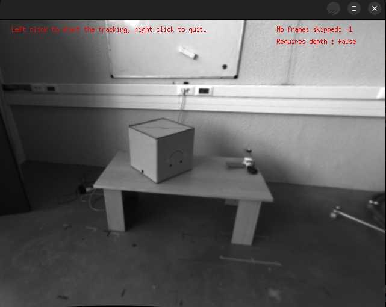
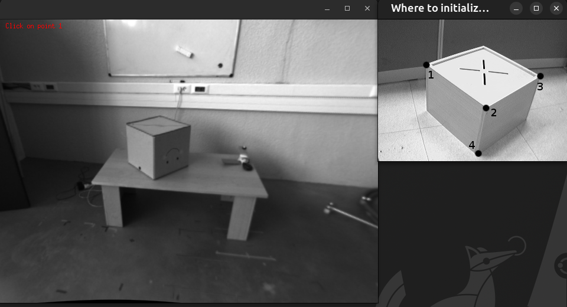
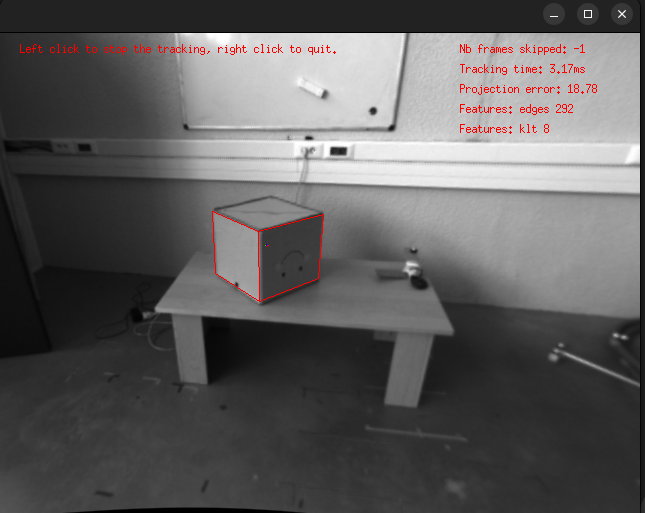

Model-Based Tracker (MBT) tutorial
This is a tutorial for the visp_mbt package. The documentation of the Model-Based Tracker (MBT) provided
by ViSP can be found here
ViSP documentation also provides step-by-step tutorials to progressively learn how to use the MBT
here .
Consequently, this tutorial will not focus on explaining the meaning of the different parameters of the
MBT, but instead focus on the specificities on how to use the visp_mbt package.
A node of the visp_mbt package can either be initialized using a JSON configuration file or an XML configuration
file. Depending on the type of the configuration file, some parameters of the node must be or must not be set.
Consequently, we will study the two cases separately.
Tutorial using a JSON file
Purpose of this tutorial
The purpose of this tutorial is to show how to configure a visp_mbt node using a JSON file.
We begin with this kind of file because it is the simplest way of configuring the node.
If you have the choice between the XML and the JSON options, we suggest you to use a JSON file.
See ViSP tutorial for
more information.
How to launch it
If you compiled the packages, you have to source the workspace in which you have compiled the packages.
Otherwise, if you installed the packages using the package manager, you only have to source the /opt/ros/${ROS_DISTRO}/setup.bash
file (or one of the other setup files if you are not using bash).
Then you can run:
ros2 launch visp_tk_tutorials mbt_json_launch.py
The launch file accepts different arguments. To have the list and the explanations related to the arguments, please run:
ros2 launch visp_tk_tutorials mbt_json_launch.py --show-args
When you first start the launch file, you should see something similar to the following image:


After left clicking on the image, the tracker will be turned on, and you should see


After having click on the corners of the cube, respecting the ordering explained in the small window that opened on the side, you should see the cube being tracked. A left click will momentarily pause the tracker, while a right click will kill the node.


Code explanation
Let’s have a look at mbt_json_launch.py. Because it is a fairly big file, we will study the parts
separately. Let’s first have a look to the generate_launch_description() method that is called
by the ros2 launch utilitary or by a call to IncludeLaunchDescription in another launch file:
As you can see, the generate_launch_description() method mostly declare the launch arguments and
register an OpaqueFunction object that will be called once the context of the launch file will
be known. However, it is important to notice that it also sets an OpenMP environment variable. It helps accelerate
the processing of depth images when the depth stream is used too.
Here is a quick overview of the prepare_parameters() function:
First, we get the launch arguments values and store them in a dictionnary that will serve at initializing the node:
Then, we check the validity of some launch arguments. The parsing of empty lists in ROS2 can be problematic, so we have to use a small trick to handle that case:
Then, we instanciate the visp_mbt node, using the dictionnary that we previously filled:
Then, we create a process that will play the rosbag:
Then, we group the spawning of the node and of the process into a GroupAction object:
Finally, we ask to shutdown the whole launch file when the visp_mbt node dies:
Tutorial using an XML file
Purpose of this tutorial
The purpose of this tutorial is to show how to configure a visp_mbt node using an XML file.
If you have the choice between the two options, we suggest you to use a JSON file instead,
but you may not have the possibility if ViSP has not been compiled with the required dependency.
See ViSP tutorial for
more information.
How to launch it
If you compiled the packages, you have to source the workspace in which you have compiled the packages.
Otherwise, if you installed the packages using the package manager, you only have to source the /opt/ros/${ROS_DISTRO}/setup.bash
file (or one of the other setup files if you are not using bash).
Then you can run:
ros2 launch visp_tk_tutorials mbt_xml_launch.py
The launch file accepts different arguments. To have the list and the explanations related to the arguments, please run:
ros2 launch visp_tk_tutorials mbt_xml_launch.py --show-args
When you first start the launch file, you should see something similar to the following image:
After left clicking on the image, the detector will be turned on, and you should see
After having click on the corners of the cube, respecting the ordering explained in the small window that opened on the side, you should see the cube being tracked. A left click will momentarily pause the tracker, while a right click will kill the node.
Code explanation
Let’s have a look at mbt_xml_launch.py. Because it is a fairly big file, we will study the parts
separately. Let’s first have a look to the generate_launch_description() method that is called
by the ros2 launch utilitary or by a call to IncludeLaunchDescription in another launch file:
As you can see, the generate_launch_description() method mostly declare the launch arguments and
register an OpaqueFunction object that will be called once the context of the launch file will
be known. However, it is important to notice that it also sets an OpenMP environment variable. It helps accelerate
the processing of depth images when the depth stream is used too. It is also interesting to notice that in the case
of using an XML configuration file, the parameters rgb_model_file, tracker_names and tracker_types must be set.
Here is a quick overview of the prepare_parameters() function:
First, we get the launch arguments values and store them in a dictionnary that will serve at initializing the node:
Then, we check the validity of some launch arguments. The parsing of empty lists in ROS2 can be problematic, so we have to use a small trick to handle that case:
Then, we instanciate the visp_mbt node, using the dictionnary that we previously filled:
Then, we create a process that will play the rosbag:
Then, we group the spawning of the node and of the process into a GroupAction object:
Finally, we ask to shutdown the whole launch file when the visp_mbt node dies:
Tutorial using a Realsense camera
Purpose of this tutorial
The purpose of this tutorial is to show how to configure a visp_mbt node when using an RGBD sensor.
We chose to use a Realsense RGBD sensor, and deliberately chose not to require the depth stream aligned
with the color stream in order to show you how to face such a situation.
How to launch it
If you compiled the packages, you have to source the workspace in which you have compiled the packages.
Otherwise, if you installed the packages using the package manager, you only have to source the /opt/ros/${ROS_DISTRO}/setup.bash
file (or one of the other setup files if you are not using bash).
Then you can run:
ros2 launch visp_tk_tutorials mbt_live_rs2_launch.py
The launch file accepts different arguments. To have the list and the explanations related to the arguments, please run:
ros2 launch visp_tk_tutorials mbt_live_rs2_launch.py --show-args
If nothing appears on screen, it may mean that the realsense_camera package changed the names of
the topic on which are published the data. Please run ros2 topic list and ros2 topic info -v /<camera_topic>
to check if the realsense_camera publisher and the tracker_rbt subscriber are both listed.
If not, please change the topic names accordingly.
Code explanation
We will only show the explanation of how is handled the fact that we use a depth stream that is not aligned with the color stream.
In the instanciation of the camera node, which is done in the rs_launch.py launch file of the realsense_camera
package, we explicitly ask not to align the depth stream with the color stream, and to publish the TFs in order to have
the transform between the frames of the two sensors (the color one and the depth one).
By telling that the reference_tracker is the Color one, we mean that the tracking results will be expressed with
regard to the color sensor. We then give the name of the frame that corresponds to the color sensor.
By telling that the other_tracker is the Depth one, we mean that the tracking features of the depth frame will be
translated into the frame of the color sensor. We then give the name of the frame that corresponds to the depth sensor
to extract the extrinsics from the TFs that are published.